Gearing and Gearboxes Training Module
Gears are one way to move power through a robot
Gears
Compact, precise, and positive engagement. Great when shafts are close and alignment is controlled.
Chain and Sprockets
Good for longer distances, high loads, and mechanisms where some center distance flexibility helps.
Belts and Pulleys
Quiet, light, and smooth. Useful for rollers, shooters, and compact motion runs when tension is planned.
Design choice: Use gearing when you need a compact fixed relationship between shafts or a packaged gearbox solution.
Driver/Input
The gear connected to the motor or previous stage.
Driven/Output
The gear that receives motion and sends it to the mechanism.
Idler
A middle gear that changes rotation direction but does not change the overall ratio.
Gear Ratio
The relationship between input teeth and output teeth.
Torque
The force of rotation. Usually measured in N-m (Newton-Meters) or lb-ft (Pound-Foot).
Angular Velocity
The velocity of rotation. Usually measured in RPM (revolutions per minute).
Gears can change the direction of motion, the output velocity, and the output torque.
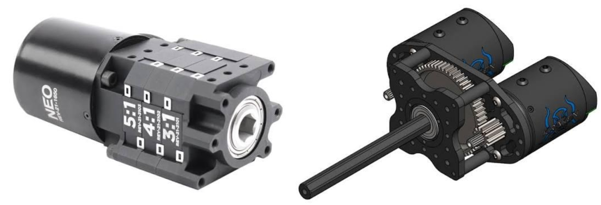
Gears can change the direction of motion
2 Gears
Input and output spin opposite directions.
3 Gears (Idler Gear in middle)
Input and output spin the same directions.
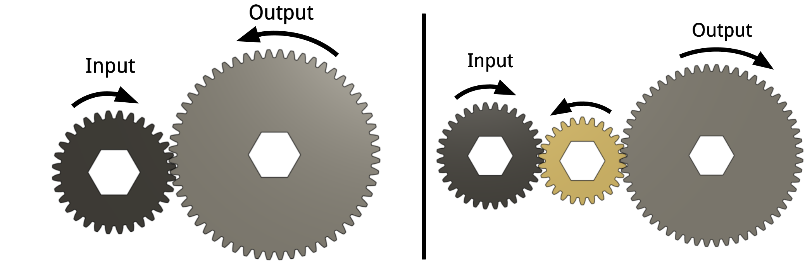
Simple gear trains have ratios based on the count of teeth of the output gear divided by teeth of the input gear. That ratio determines how the the gears affect output torque and velocity.
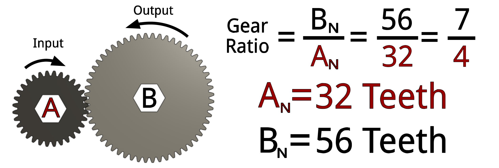
Gear Ratio = Output Teeth ÷ Input Teeth
Only Input and Output Count
Simple gear train ratios are only deteremined by the output and input gears. The only thing idler gears can do is reverse the direction.
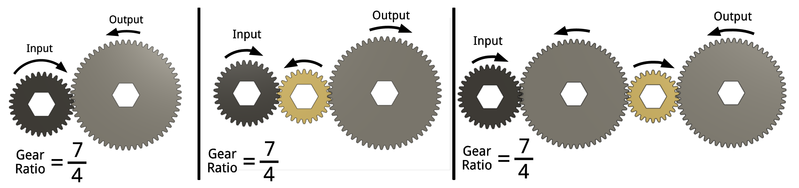
Gearing trades angular velocity and torque
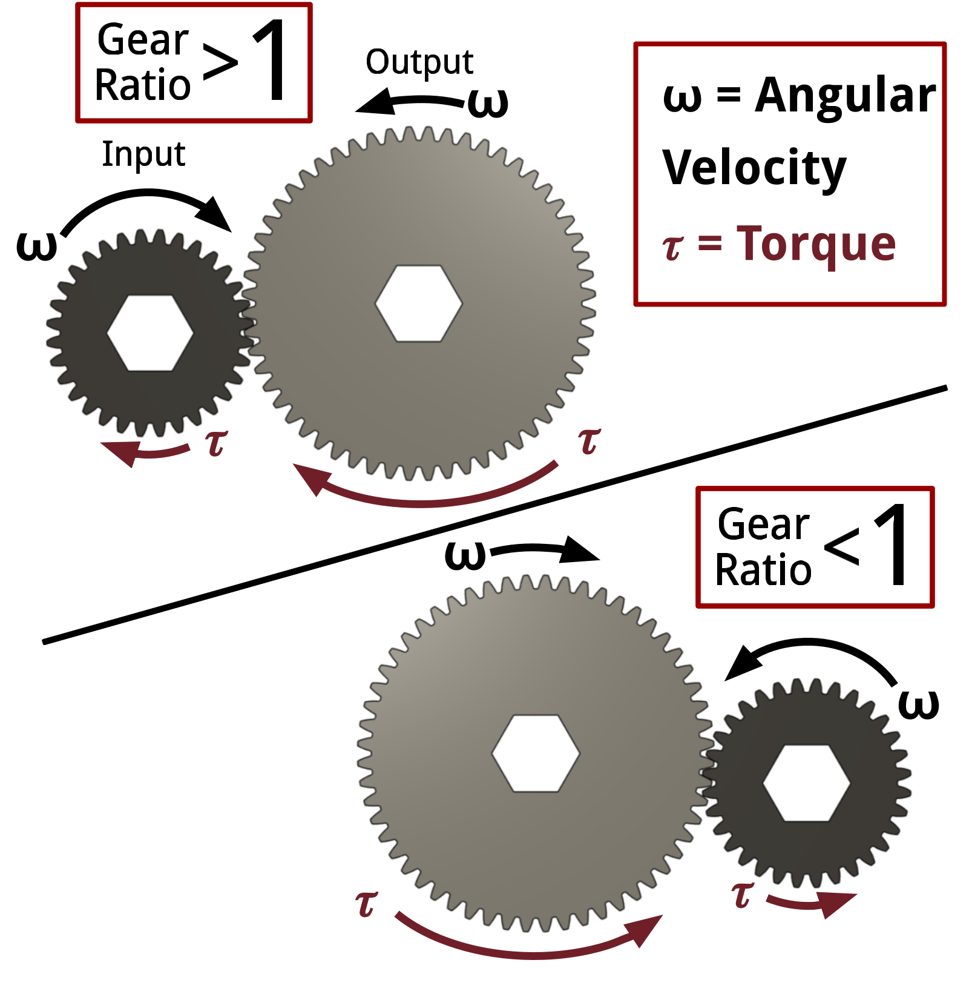
Gearing Ratio Outputs
- Ratio greater than 1: more torque, less speed.
- Ratio equal to 1: no major change in torque or speed.
- Ratio less than 1: more speed, less torque.
FRC teams use this tradeoff constantly when tuning drivetrains, arms, shooters, climbers, and intakes.
Compound gears allow you to create much larger gear ratios without needing huge gears. In a compound gear one axle holds multiple gears, so the output of one stage drives the input of the next stage. This can be repeated more than once.
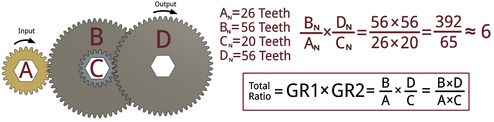
Total Ratio = Gear Ratio 1 × Gear Ratio 2 ×...
A gearbox packages gears, shafts, bearings, and mounting

Why use a gearbox?
- Gets the mechanism to the right speed and torque.
- Supports shafts with bearings.
- Mounts motors cleanly.
- Keeps gear spacing accurate.
- Makes repair and replacement more repeatable.
What is the mechanism need?
Drivetrain
Balance top speed, acceleration, pushing, current, wheel size, and driver control.
Arm / Wrist
Needs enough torque to move and hold against gravity without overheating.
Shooter
Often needs high wheel speed, fast recovery, and consistent velocity control.
Intake
Usually needs moderate speed, enough torque to avoid jams, and compliance.
Elevator
Needs torque for lifting, speed for cycle time, and braking/holding strategy.
Climber
Needs high torque, strong structure, controlled motion, and safe load holding.
Swerve
Needs precise direction control and enough torque to turn the module quickly.
Conveyor
Needs enough speed to feed reliably without damaging game pieces.
Use the gearbox that meets the need
| Type | Best For | Main Advantage | Main Concern |
|---|---|---|---|
| Single-Speed Spur | Drivetrains, elevators, climbers | Simple and reliable | One fixed compromise |
| Dual-Speed Shifting | Tank drives, speed + pushing | Switches ratios | More complexity |
| Right-Angle | Swerve, tight packaging | Turns power 90° | Alignment sensitive |
| Planetary | Arms, intakes, wrists, prototypes | Compact modular reduction | Shock and side loads |
Strong, simple, and common in FRC
Use when...
- The mechanism only needs one speed range.
- Reliability matters more than shifting complexity.
- You can pick a ratio that balances speed, torque, current, and control.
FRC examples
Tank drivetrains, elevators, arms, climbers, and simple custom reductions.
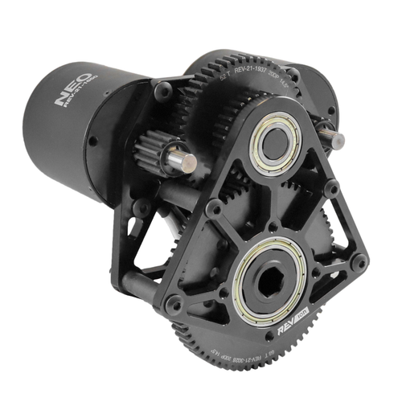
Two ratios: one for speed, one for torque
Low Gear
More torque, less speed. Useful for acceleration, pushing, or reducing current during heavy load.
FRC examples
AndyMark EVO Shifter and WCP dog-shifting gearboxes on tank drive robots.
High Gear
More speed, less torque. Useful for full-field sprinting when the robot has room to move.
Shifting Mechanisms
In FRC gearboxes, shifters usually work by using a dog gear, shifting dog, sliding clutch, or similar locking part to engage one of two gear paths: a high-speed ratio or a low-speed/high-torque ratio. The shifting action is commonly done with a pneumatic cylinder, servo, or other mechanical actuator that moves the locking part into the desired gear position.
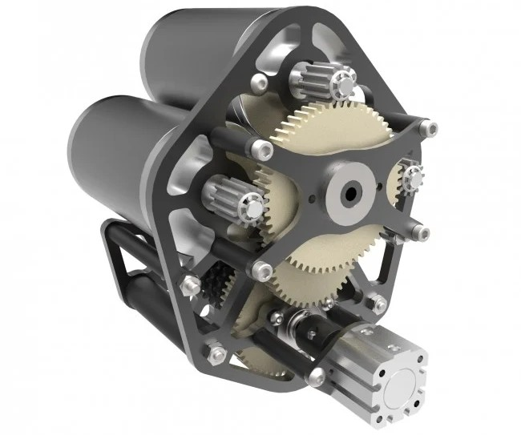
Change the direction of power by 90 degrees
Common uses
- Swerve drive modules.
- Intakes or conveyors where the motor must mount sideways.
- Mechanisms where moving the motor protects it from impact.
Bevel gear alignment and bearing support matter a lot.
FRC examples
AndyMark LJ Bevel Box, Swerve Drive Modules, and REV MAX 90 Degree Gearbox
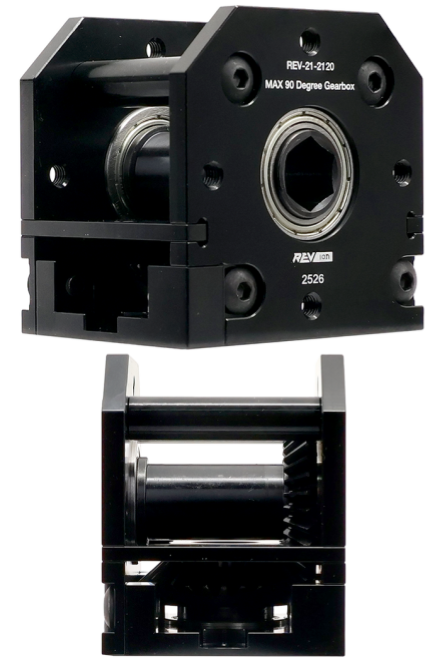
The Basics
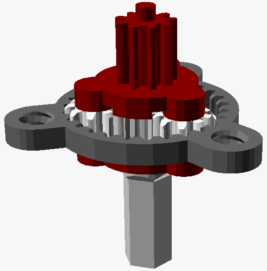
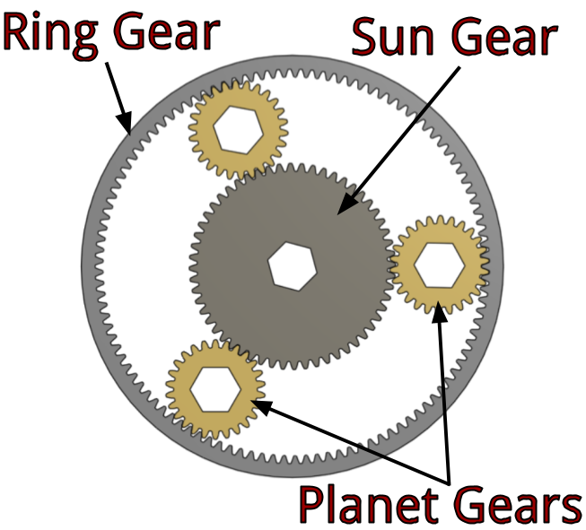
How they work
A planetary gear system uses a sun gear that drives smaller planet gears around it.The planet gears mesh with an outer ring gear, which depending on the design carry the motion through a planet carrier
Compact modular reduction
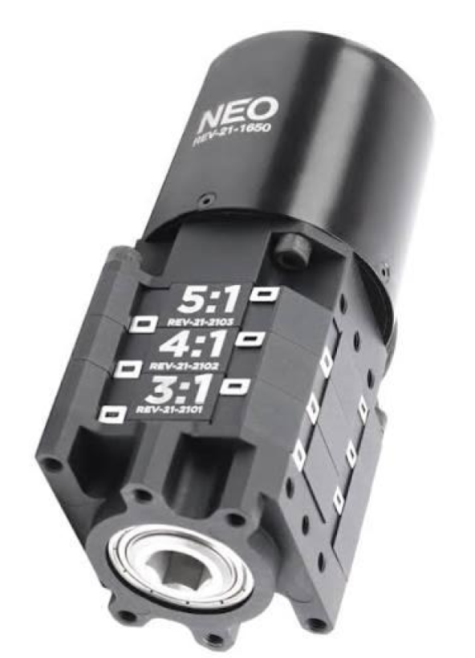
Why teams like them
- Compact for the amount of reduction.
- Easy to mount to many FRC motors.
- Ratios can often be swapped during prototyping.
- Useful for arms, wrists, intakes, conveyors, and light-to-medium climbers.
FRC examples
REV MAXPlanetary, WestCoast Products VersaPlanetary, and AndyMark Sport Gearbox
When off the shelf won't do
Custom Gearbox Use Cases
- Arms that need high reduction and strong shaft support.
- Elevators where it needs to fit tightly into the frame and drive chain, belt, or spool systems.
- Climbers that need very high torque, strong shafts, ratchets/brakes, or compact packaging.
- Shooters when a team wants a very specific wheel speed, belt path, or multi-motor setup.
- Intakes and rollers where the motor needs to be tucked away from impacts while still driving several shafts.
- Turrets or rotating mechanisms that need controlled slow rotation and good support against side loads.
- Multi-output mechanisms where one motor drives multiple shafts or actions through gears, belts, or chains.
A custom gearbox has more than just gears
Plates
Rigid, accurately spaced side plates hold shafts and bearings in alignment.
Shafts
Use the right shaft size, length, material, retaining method, and output interface.
Bearings
Support shafts on both sides of loaded gears when possible.
Gear Mesh
Correct pitch, tooth count, center distance, and profile must match.
Loads
Plan for torque, side loads, shock loads, and stall current.
Service
Design so students can inspect, lubricate, replace gears, and remove motors.
Most gearbox problems start in the design stage
Too Fast
The mechanism draws high current, accelerates poorly, or becomes hard to control.
No Shaft Support
Output shafts bend, bearings loosen, gears wear, and planetary outputs fail.
Wrong Mesh
Gears are noisy, bind, skip, or wear because the center distance is wrong.
Shock Loading
Hard hits or sudden stops break teeth, stages, keys, or couplers.
No Maintenance Access
Fast repairs become impossible because motors or shafts are trapped.
Ignoring Current
Motors brown out, breakers trip, or controllers overheat during matches.
Pass to complete the module
Each question is on its own slide.
Answer all 20 questions, then grade the quiz. Score at least 18 out of 20 to unlock the completion certificate.
Grade the quiz
You need at least 18 out of 20 to unlock the completion certificate.
Not submitted.
After passing, advance to the final completion certificate.